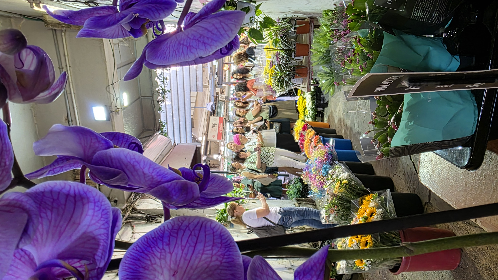

שאלות ותשובות על סדנאות צילום בנייד
כאן מרוכזות השאלות שאנשים שואלים אותי הכי הרבה לפני סדנת צילום בנייד או הרצאה. המטרה היא שתדעו בדיוק למה לצפות ואיך להתאים את הסדנה או ההרצאה לקבוצה שלכם.

כאן מרוכזות השאלות שאנשים שואלים אותי הכי הרבה לפני סדנת צילום בנייד או הרצאה. המטרה היא שתדעו בדיוק למה לצפות ואיך להתאים את הסדנה או ההרצאה לקבוצה שלכם.
בסדנה לומדים איך להפיק תמונות מקצועיות מהנייד בלבד. נלמד על קומפוזיציה נכונה, תאורה, זוויות, טכניקות מיוחדות וטיפים לעריכה מהירה באפליקציות פשוטות.
נתרגל צילום נופים, אנשים, מוצרים ותנועה. נלמד לזהות אור טוב, לבנות פריים נכון, להשתמש במצבי צילום חכמים ולערוך תמונות כך שיספרו סיפור ברור.
כל סמארטפון עם מצלמה בסיסית מתאים – אייפון, אנדרואיד, חדש או ישן. מה שמשנה הוא איך משתמשים בו, לא הדגם.
לא חובה בכלל. מתרגלים בסדנא אחיזה יציבה ונכונה. אפשרי להביא חצובה קלה (גם ב‑20 ש״ח) שעוזרת לסלפי וחשיפות ארוכות, אבל אפשר גם בלי. בחלק מהסדנאות אני מביאה ציוד נוספים – פלייסמטים מיוחדים לצילום מוצרים לבעלי עסקים, ציוד יצירה לילדים שמשתלב עם סדנת הצילום ועוד אביזרים שמעשירים את החוויה.
הסדנה מותאמת לגיל השלישי: קצב וסבלנות, הסברים ברורים, תרגול מעשי בשלבים ומקומות ישיבה זמינים. יש זמן לשאול, להדגים ולהתנסות בנחת. המשתתפים מרגישים שלא נשארים מאחור והם חלק מהטכנולוגיה של ימינו
ממש לא. מתחילים מהתפריטים הכי בסיסיים ומתקדמים לאט. בכל שלב אני ניגשת אישית ועוזרת לכל משתתף בנייד שלו.
הנייד טעון, מטען נייד רצוי, והרבה סקרנות. את כל שאר הציוד אני מביאה – דוגמאות לצילום, אביזרים קטנים ותכני תרגול.
העובדים מתרגלים ומתנסים בצילום אחד את השני, את האווירה, את המקום ובמידה והסדנא מועברת במקום העבודה פיזי הם לומדים לצלם את אזורי העבודה בצורה מחמיאה. התוצאה תהיה יותר תוכן איכותי לרשתות, לדפי נחיתה ולתקשורת פנים‑ארגונית.
כן. למרות שאת הסדנאות אני ממליצה לעשות באויר הפתוח לצאת משגרת היום יום ולחוות פעילות מגבשת מיוחדת. במידת הצורך אני מגיעה למשרד, מנצלת את המרחבים האמיתיים של הארגון כסט צילומים, ומתאימה את התרגול לערכים ולשפה של החברה.
זה משתנה. יש סדנאות קצרות של 2–4 שעות, יש תהליכים של 4–6 מפגשים, ויש סדנאות שממש משמשות כחוג שהן יותר מעמיקות ומתקיימות פעם בחודש. הסדנאות האלו נפרסות לאורך שנה שלמה לפי הצורך.
סיורי צילום מעשיים בחו"ל בקבוצות קטנות לצורך יחס אישי. מצלמים אווירה, לומדים על תאורה, זוויות, אחיזה נכונה ועוד. מנצלים את האור בשעות הכי יפות ובלוקיישנים הכי מיוחדים של המקום, ומקבלים ליווי אישי בבחירת בתמונות ובסרטונים.
ההרצאה מיועדת לגיל השלישי, ארגוני עובדים, מרכזי תרבות ומדריכי טיולים. דרך סיפור טיול בחו"ל במקומות שבהם ביקרתי (כדוגמת וייטנאם, ונציה, מרוקו, איזרביג'אן ועוד) הקהל מקבל טיפים פרקטיים לצילום בנייד שווקים, נופים, תרבויות ארכיטקטורה ולילה.